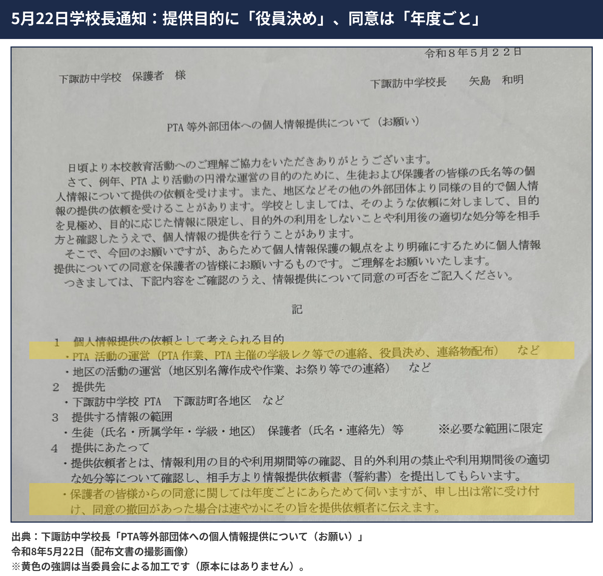
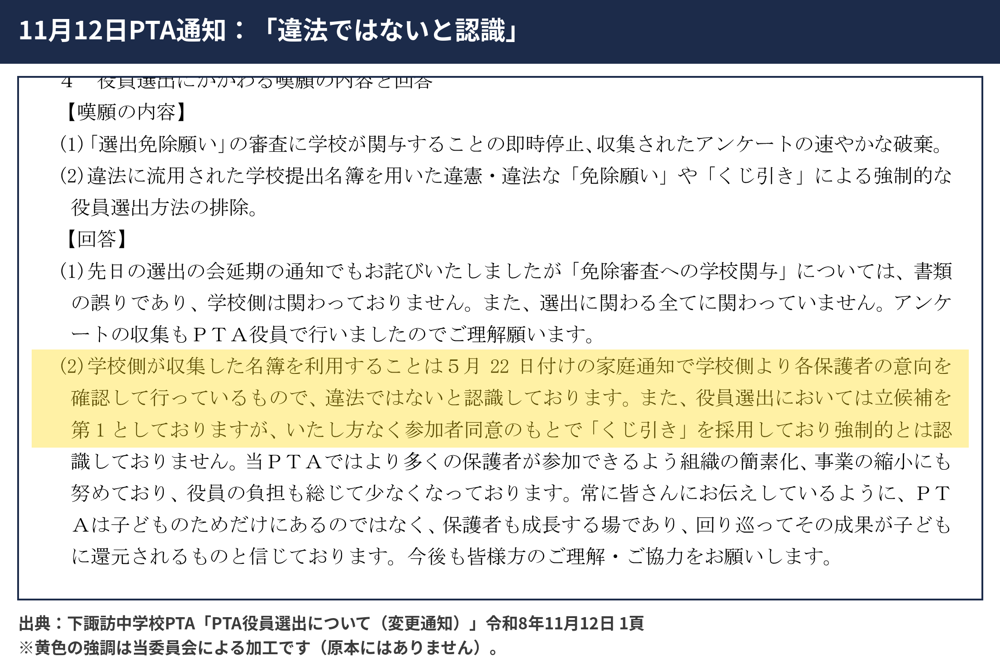
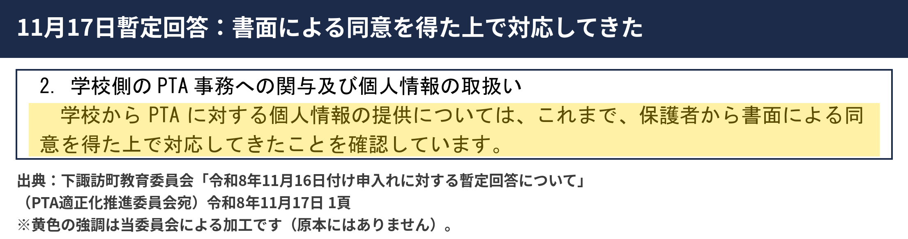
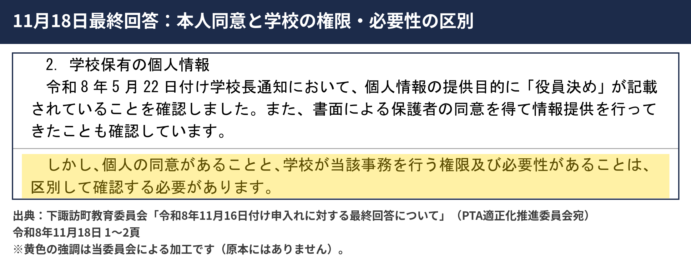
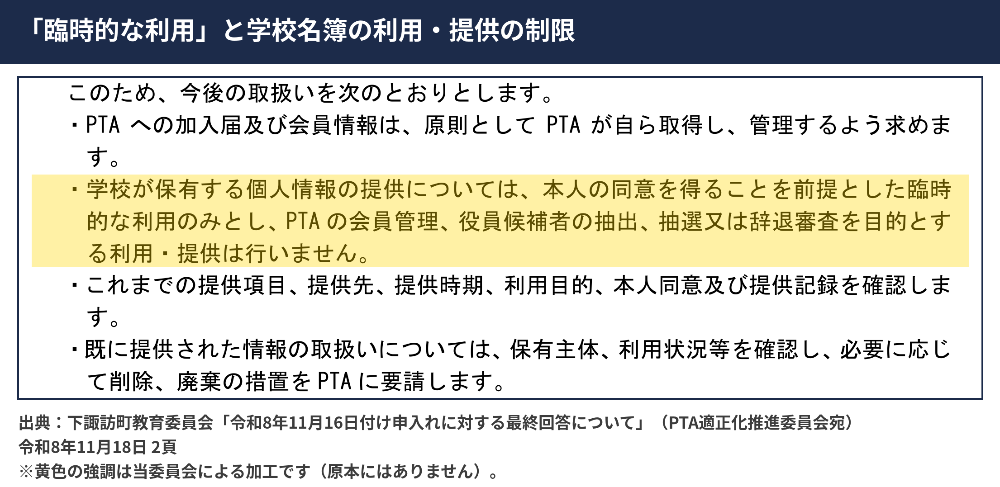
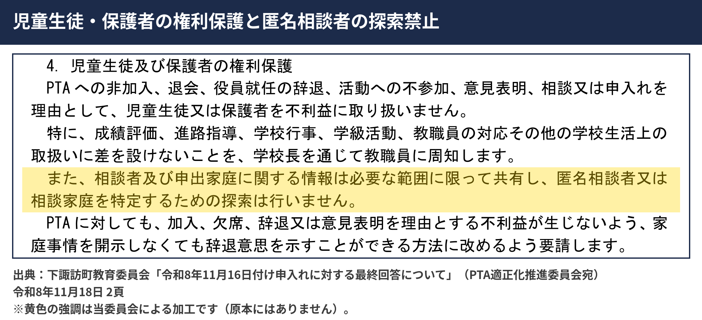
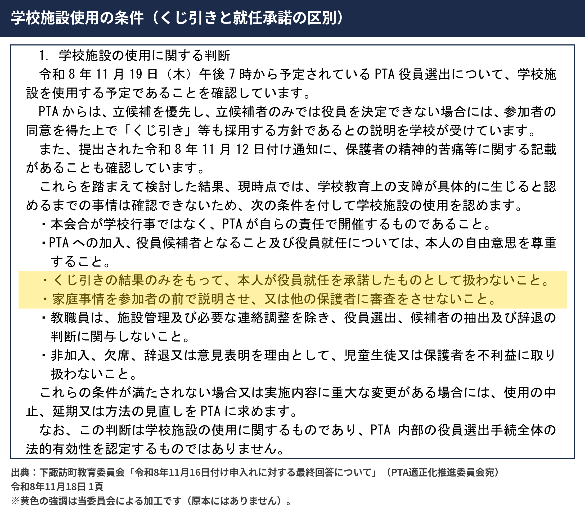
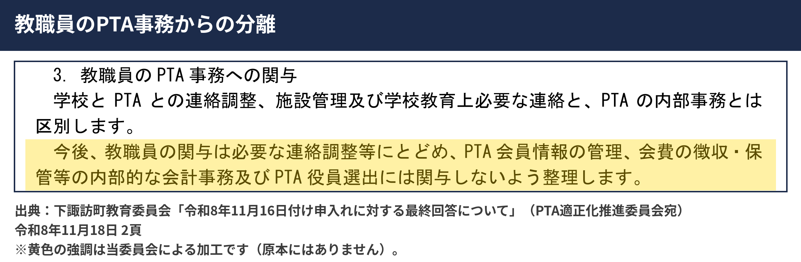

一次資料で追う｜保護者の声と行政の判断 2026年5月〜11月
「同意しているから違法ではない」――その説明を、教育委員会が書き換えるまで
役員を断るために家庭の事情を明かさなければならない。学校の名簿が役員を決めるために使われる。そうした悩みを抱えた保護者が声を上げた。2026年11月18日、下諏訪町教育委員会は、本人の同意と学校の権限は別だと明言し、学校名簿をPTA役員選出目的に提供しない方針を示した。これは単なる「同意書の改善」ではない。公立学校と私的な任意団体の境界を、行政自身が引き直した記録である。
「個人の同意があることと、学校が当該事務を行う権限及び必要性があることは、区別して確認する必要があります。」
「学校が保有する個人情報の提供については、本人の同意を得ることを前提とした臨時的な利用のみとし、PTAの会員管理、役員候補者の抽出、抽選又は辞退審査を目的とする利用・提供は行いません。」
この二つを合わせて読む必要がある。学校からPTAへの名簿提供を「同意さえあれば毎年できる」という運用から、学校の所掌事務・権限を出発点とする運用へ改める行政方針である。
1．学校長通知に「役員決め」の四文字があった
2026年5月22日、下諏訪中学校長が保護者へ配布した「PTA等外部団体への個人情報提供について（お願い）」には、PTA活動の運営に関する提供目的として「役員決め」の記載があった。生徒の氏名、所属学年・学級・地区、保護者の氏名・連絡先などが対象であり、同意は「年度ごとに」確認する方式だった。

一見、本人の同意を丁寧に得ている制度に見える。しかし問題の出発点は「毎年同意を取っていたか」ではない。役員選出はPTAという私的団体の内部事務である。学校が教育のために取得した保護者や生徒の名簿を、その私的な事務に利用・提供する権限をどこに持っているのか。学校側の所掌事務と情報の取扱いを区別しなければ、この問いに答えられない。
さらに、学校からPTAへ情報提供することへの同意は、PTAへの加入申込みでもなければ、役員就任の承諾でもない。三つの意思表示を同じものとして扱うと、加入・退会・役員辞退の自由が制度の入口で失われる。
2．「役員を断れない」という保護者の訴え
2026年11月9日、1年生保護者有志が嘆願書を提出した。PTAの役員選出をめぐる免除願いの審査、学校名簿の使用、抽選での就任をめぐって、強い不安と心理的負担が生じていると訴えた。嘆願書の存在と保護者側の訴えは確認できるが、健康被害や個別の強制行為について教育委員会が事実認定したと書き換えてはならない。
11月12日、PTA会長は役員選出会を11月19日に延期する変更通知を配布した。名簿についてPTAは、学校が5月22日付通知で各家庭の意向を確認していることを理由に「違法ではないと認識」していると説明した。また学校の「免除審査への関与」と書いたのは書類の誤りであり、学校は役員選出に関わっていない旨も説明した。

ここで学校とPTAの役割分担が問われる。PTAは学校と別の主体として、自ら会員を確認し、役員候補を募り、必要な情報を自ら取得できる。学校名簿を利用する制度を「同意書があるから」と説明するのであれば、なぜ学校がその役員選出事務のために情報提供できるのかを、別に説明しなければならない。
3．行政に何を求め、行政は何を回答したか
当委員会は、学校教育法137条に基づく学校施設使用の審査と、PTA内部事務への学校保有情報・教職員の関与、役員就任の自由意思、子どもの権利保護を、それぞれ独立の判断事項として教育委員会と学校長に照会した。
教育委員会は、学校が保護者から書面同意を得てPTAに情報提供してきたことを確認。PTA自身による加入情報の取得、学校職員を役員選出や会費徴収等の内部事務から分ける方針、非加入や辞退による不利益の防止を既に提示した。
当委員会は5月22日の学校長通知と11月12日のPTA通知を示し、「学校からPTAへの情報提供の同意」と「加入契約の成立」は別であり、本人同意も学校の権限を創設しないことを、個人情報保護法61条・69条と個人情報保護委員会Q&Aに沿って説明した。
教育委員会は学校長通知の「役員決め」の記載を確認し、本人同意と学校の権限を区別すること、PTAの会員管理・候補抽出・抽選・辞退審査のため学校名簿を利用・提供しないこと、過去の提供記録を調査すること、相談家庭の探索をしないことを明記した。


補充意見を提出した翌日に、学校長通知の具体的な記述を行政が確認し、同意と権限の区別を最終回答へ書き込んだ。資料提出と行政判断の対応関係は記録で確認できる。最終回答は単なる一般論ではなく、今後の学校名簿の利用・提供の取扱いを具体的に限定する方針につながっている。
4．暫定回答と最終回答を比較する――方針転換ではなく具体化
| 論点 | 11月17日の暫定回答 | 11月18日の最終回答 |
|---|---|---|
| 学校の権限と同意 | 書面同意を得て情報提供したことを確認 | 本人同意と学校の権限・必要性を明確に区別【新たに明記】 |
| 名簿利用 | PTAが加入届・会員情報を自主取得し、学校は内部事務に関与しない方針 | 役員候補の抽出・抽選・辞退審査等を目的とする学校情報の利用・提供をしないと明記【新たに明記】 |
| 過去の情報 | 情報提供や職員関与を引き続き確認 | 項目、提供先・時期、目的、同意と記録を調査し、必要に応じ削除・廃棄要請【具体化】 |
| 教職員 | 会員管理、役員選出、会費徴収等の内部事務からの分離を示す | 会費の「徴収・保管等の内部的な会計事務」も明示【具体化】 |
| 子どもの不利益 | 成績・進路・学校生活で不利益を設けない | 方針維持に加え、匿名相談者・相談家庭の探索禁止を明記【拡張】 |
| くじ引きと施設 | 当選だけでの就任確定を認めず、施設使用を条件付きで認める方向 | 家庭事情の公開審査禁止等を追加して施設使用を認める【条件具体化】 |
暫定回答が何もしていなかったわけではない。既にPTA内部事務からの学校の分離、自由意思の尊重、不利益防止を整理していた。そのうえで最終回答は、権限と同意の区別、名簿の用途制限、過去の情報の調査など、実務上の次の措置を特定した。
5．「臨時的」に限定するとは、毎年の名簿提供をどう変えることか

最初に、公立学校とPTAの別主体性を確認する
公立学校と教育委員会は公的主体であり、PTAは任意加入の私的団体である。会員情報の収集、役員候補者の抽出、辞退審査、会費請求・徴収は原則としてPTAが自ら実施する。学校が内部事務を担う場合、先に学校側の具体的な所掌事務・公法上の権限を検証する。学校長の裁量、校務分掌、PTAからの委任、保護者の同意はそれだけで学校の業務権限を生まない。
個人情報保護法61条から始め、69条へ進む
個人情報保護法61条1項は行政機関等による保有を「法令の定める所掌事務又は業務を遂行するため必要な場合」に限り、利用目的の特定を求める。69条1項は目的外利用・提供を制限し、2項は本人同意等の例外を定める。つまり「同意書があるか」を先に見るのではなく、どの事務のために学校が情報を保有し、何のために利用・提供できるかを先に検証しなければならない。
毎年の同意書を配ることと、臨時的な利用・提供とは違う
個人情報保護委員会Q&A Q3-3-2は、法69条2項の例外による利用・提供は臨時的な場合の規定であり、恒常的な利用・提供には61条に基づく利用目的の事前特定又は変更が必要だと説明する。個人情報保護委員会Q3-3-2の原文。
ここで問題なのは、同意を年1回取り直せば恒常的な学校名簿提供が「臨時的」に変わると考えることだ。5月22日通知は「役員決め」のために年度ごとの同意を想定していた。実際にどの年度に何を提供したかは今後の調査対象だが、反復される事務としての設計が読み取れる。制度として毎年繰り返す情報提供の権限を、臨時的な目的外提供の例外だけで説明することはできない。
さらに、恒常的な利用目的として設定し直す場合でも、学校の所掌事務の範囲を越えて自由に利用目的を設定できるわけではない。PTAの役員選出という私的事務を学校が行う具体的な所掌事務・必要性が先に問われる。この出発点を抜かせないことが、最終回答の「本人同意と権限を区別する」という文言の重要な法的意味である。
6．名簿を切り離すことが、PTA入会と退会の自由を守る
PTAへの加入は私的団体との契約関係であり、民法521条の契約自由、522条の申込み・承諾による合意成立が出発点になる。非加入届を出さなかったことや、学校に在籍していることだけで、加入したことにしてよいわけではない。
学校の在籍名簿をPTAが役員選出に利用している場合、加入していない家庭も候補者に含まれ得る。そこで「免除願い」を提出させ、家庭の病気や介護、収入や就労事情を示さなければ断れない仕組みを設ければ、加入を自ら選ぶという順序が逆転する。そもそも「免除の審査」が必要になる前に、加入の意思と役員就任の承諾を確認しなければならない。
最終回答がPTA自らの加入届・会員情報の取得管理を求め、学校名簿を役員候補者の抽出に利用・提供しないと明言したことには、保護者に「加入しない」と言わせて除外する方式ではなく、希望する人が自ら加入する方式へ整えるという実務的な意味がある。加入を希望しない保護者とその子どもは、最初からPTAの会員・役員候補者・会費請求先と区別されるべきである。
学校が名簿を渡さず、PTAが自ら加入希望者の個人情報を取得し、本人の意思に基づく活動をすることは、PTAの自主性を損なうどころか、学校から独立した団体としての責任を明確にする。
7．くじ引きの「当たり」は承諾ではない――家庭の尊厳と子どもの平等
教育委員会は、くじ引きの結果だけで役員就任の承諾と扱わないことを施設使用の条件にした。候補順を選ぶ方法と、本人が役員を引き受ける意思は別だ。「当たったから役員に確定」という運用は、本人の意思を確認する手順を欠く。
また、病気、介護、貧困、仕事といった私生活の事情をほかの保護者の前で話し、審査させる手続を認めないことを条件にした。辞退は「家庭の事情が重いと認められた者だけに許す免除」ではなく、本人の意思を尊重する問題として扱わなければならない。
最終回答では、非加入・退会・辞退・意見表明・相談・申入れを理由として児童生徒や保護者に不利益を与えず、成績評価、進路指導、行事や教職員の対応で差を設けない方針も確認された。

「匿名の相談家庭を特定するための探索は行わない」という明言は重要だ。保護者が行政に相談したことが学校で子どもの扱いを変える原因にならないようにする。これは保護者が自らの結社・参加の自由を安心して行使できる条件でもある。
8．学校施設の使用許可と、学校のPTA事務は別問題
教育委員会は11月19日に予定された役員選出会の学校施設使用を、自由意思、抽選後の就任承諾、家庭事情の非公開、教職員の不関与などを条件として認めた。一方で、学校施設の使用を認めることはPTAの役員選出手続の法的有効性を認定するものではないと明記した。

学校教育法137条などに基づく施設管理の判断は公的主体の業務である。他方、PTAの加入・役員選出自体はPTAの私的な内部事務である。施設使用を許可した事実をもって、学校が抽選による就任を承認したことにも、学校が名簿を使ってよいことにもならない。
教職員の職務についても、最終回答は会員情報の管理、会費の徴収・保管等の内部会計、役員選出への関与をしないよう整理した。勤務時間中の事務の問題は地方公務員法35条と、学校側の所掌事務に関わる。会費を保管していた実態がある場合には、地方自治法235条の4第2項と例外の該当性も、保管主体や口座を確認して検証する必要がある。

こうして学校に残る仕事は、学校施設を適正に管理すること、学校保有情報を守ること、教職員の職務を適正に管理すること、子どもの権利を保護することである。PTAの会員管理と役員選出を学校が代行することではない。
9．下諏訪町教育委員会の暫定回答・最終回答全文
以下は当委員会宛てに送付された回答PDFから抽出したテキスト。PDFの行末改行や空白が残るが、本文は省略せず掲載する。見出しや評価とは区別し、原本を画像とPDFでも読めるようにした。
2026年11月17日暫定回答・全文を開く
2026年11月18日最終回答・全文を開く
10．行政に残る具体的な仕事――回答の後を追う
最終回答は方針の明文化で終わりではない。次に教育委員会へ確認すべき事項は具体的である。
- これまで学校からPTAへ渡した個人情報の項目・提供先・時期・目的・同意・提供記録を調査した結果と、その根拠資料。
- すでに提供された名簿をPTAがどこに保有し、どの活動に利用したか。削除・廃棄要請の必要性とその実施状況。
- 学校長通知が挙げた「役員決め」以外のPTA作業・学級レクリエーション連絡・配布等の目的について、学校の所掌事務と61条・69条への適合性を個別に再点検した結果。
- 学校職員を会員管理、会費の徴収・保管、役員選出から実際に分離した措置、学校長への周知、現場の記録。
- 11月19日の役員選出に付した条件の実施状況。くじ引きのみの就任確定、家庭事情の審査、学校保有情報の新規利用などがなかったか。
- 本人の入退会の意思、児童生徒の教育上の公平性、相談者保護についての学校とPTAそれぞれの具体的な手続。
11月19日の選出会については、開催日当日の実施内容を示す後続の原資料を本稿ではまだ確認していない。施設使用の条件が守られたかは、別に追跡すべき事実である。
閲覧できる一次資料
- 下諏訪町教育委員会 最終回答（2026年11月18日・2ページ）
- 下諏訪町教育委員会 暫定回答（2026年11月17日・2ページ）
- 下諏訪中学校PTA 11月12日変更通知（公開用一部非掲載版）
- 個人情報保護委員会 Q3-3-2：臨時的な利用・提供と恒常的な利用・提供
- 個人情報保護委員会 2026年3月・学校とPTAの個人情報のやり取り
- 個人情報保護法 ／ 民法 ／ 学校教育法
- 関連行政判断：横浜市教育委員会のPTA会費自己徴収と準公金規程の権限問題
画像は、2026年11月18日に作成・原本照合したnote公開用の図1〜8を転用した。引用は行政回答・学校長通知・PTA文書それぞれの発言主体を区別している。資料画像には当委員会による黄色の強調などを含む。非公開の保護者嘆願書やPTA通知の無加工全ページは公開せず、一般向け資料として選定した画像とPDFだけを掲出した。
この記録が意味するもの：保護者がPTAに入るか、役員を引き受けるか、どの活動に参加するかは、自分の意思で決める。学校が保有する情報をその私的な判断に流用しない。子どもの学校生活と保護者のPTAへの参加を混ぜない。下諏訪町の最終回答は、学校とPTAの協力関係を保ちながらも、その境界を行政自身が文書にしたという意味を持つ。
11．この事例が変えた問題の立て方――「断る理由」を審査する前に
下諏訪町の問題を、くじ引きの方法や役員の負担を軽くする話だけに縮めてはならない。まずPTAに加入するかどうかが自由であり、さらに別の意思表示として役員就任を引き受けるかどうかが自由である。本人が役員になる意思を表明していない段階で、家庭事情を説明させて免除の可否を審査する仕組みは、自由な参加を例外扱いに逆転させる。
くじに当たったこと、欠席したこと、辞退理由を十分に説明できなかったことは、役員就任を承諾した意思表示とは別である。選出の仕組みそのものを、本人の意思確認が先にある設計へ改める必要がある。
病気、介護、就労、経済状況、家族関係を他の保護者に説明しなければ断れない運用は、参加の自由を私生活の開示と引き換えにする。辞退に詳細な家庭事情の申告を求めない方式が必要となる。
学校長通知に「役員決め」という提供目的が記載されていた。学校とPTAは別主体で、役員選出はPTAの内部事務である。学校側の所掌事務をまず確認し、次に個人情報保護法61条・69条の順で適法性を点検する。
保護者が加入せず、退会し、役員を断り、行政に相談しても、その子どもの成績、進路、学校行事、日々の対応が左右されてはならない。町が最終回答でこの方針を文書化した意義は大きい。
「学校施設の使用を認めた」と「PTAの選出を適法と認めた」は違う
町は11月18日の最終回答において、条件を付して施設使用を認めた。その判断は施設管理に関するものであり、PTA内部の役員選出全体の有効性の認定ではない。したがって、施設使用が許されたことを理由に、抽選就任や家庭事情の審査、学校保有情報の利用を正当化することはできない。
是正方針を履行したか――次の検証の焦点
行政が最終回答に記した、PTA会員情報の自主管理、学校による新たな役員選出目的の情報提供の停止、教職員のPTA内部事務からの分離、保護者・児童生徒への不利益防止について、学校への具体的な周知文書と現場の運用記録を確認する必要がある。2026年11月19日の会合については開催結果・条件遵守の資料を本稿で確認できていないため、推測で結果を書き加えない。
結論：下諏訪町教育委員会は、PTAの自主性を理由に学校の責任を放棄するのではなく、学校が管理する情報・施設・職務・子どもの権利を自らの判断対象として明示した。保護者の参加意思を尊重することと、公教育の責任を果たすことを両立させるための重要な文書である。
関連する行政判断：横浜市の加入意思確認と会費自己徴収への見直し ／ PTAの任意加入・退会 ／ 学校の個人情報とPTA